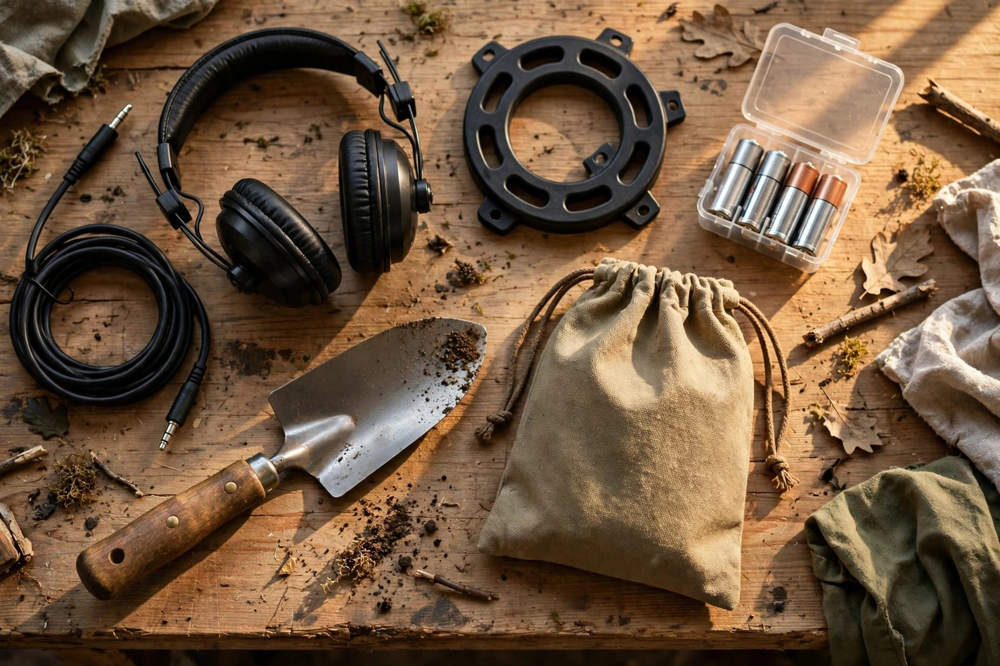

Maintenance and accessories

A metal detector is a simple machine that lasts a long time if you look after it — and a short time if you don't. Nothing here is complicated: it's the same basic care you'd give any outdoor electronics. Here's what to do after every hunt, how to store your gear, and which accessories are genuinely worth buying versus the ones that can wait.
After every hunt: five minutes
Wipe the coil clean. Soil and sand hold moisture and salt, and a caked coil is a coil that corrodes its bolts and cable connector. A damp cloth is enough — don't hose down the control box of a machine that isn't rated waterproof. Check the coil cable where it meets the connector; this junction takes the most stress on any detector, so look for cracking insulation or a loose connection and secure the cable properly along the shaft rather than letting it dangle.
Collapse the shaft and wipe it down, paying attention to the clamp or twist-lock mechanisms that seize up when full of grit. If you've been hunting a saltwater beach, give everything a wipe with a damp cloth — salt residue attacks metal parts and electronics alike.
Storage done right
Store your detector indoors, dry, and out of direct sun. Garages and sheds seem natural but they swing between freezing and baking through the year; a closet inside the house is better. Take the batteries out if you're not hunting for more than a week — a leaking battery destroys battery compartments fast, and it's the most common cause of "my detector won't turn on" after winter. Store it with the shaft collapsed or hanging, never with the coil under pressure or the cable wrapped tight around the shaft.
Before the first hunt of the season, check everything: fresh batteries, clean contacts, the coil cable secure, headphones working, and the shaft locks holding tight. Five minutes at home beats a forty-minute drive to a dead machine.
Worth buying right away
A digging tool. A proper serrated digging knife or a small, sturdy trowel is the single most useful accessory you can own. It cuts clean plugs in turf and powers through roots and packed soil. Kitchen knives and garden trowels bend and break — buy the real thing once.
A finds pouch. A waist pouch with two sections — one for finds, one for trash — sounds trivial and is transformative. Your pockets fill up fast, and carrying trash separately is what makes "take the trash with you" actually happen. Any sturdy belt pouch works.
Gloves. You'll be handling sharp, rusty, and dirty objects all day. Basic work gloves protect your hands and make grip easier when the ground is wet or cold. They're cheap and worth it from day one.
Headphones. If your machine didn't come with any, get a pair. They let you hear faint signals in wind and noise, they extend battery life by letting you turn the speaker off, and they keep the beeping between you and the hobby instead of you and everyone within fifty feet.
Worth buying later
A pinpointer. A handheld pinpointer narrows the target's location inside the hole so you dig less and recover faster. Most experienced detectorists consider it essential, but learn to pinpoint with your detector's coil first — the skill transfers, and you'll appreciate the pinpointer more when you know what it's saving you.
A sand scoop. If you hunt beaches regularly, a long-handled sand scoop turns recovery into a ten-second job. Buy it when the beach becomes a habit, not before your first visit.
A spare coil. Extra coils — smaller for trashy sites, larger for open ground — are real tools with real uses. They're also wasted money until you know what kind of hunting you do most. Hunt a season, then decide.
Protective gear. A coil cover, a rain cover for the control box, and a kneeling pad all earn their place eventually, roughly in that order. None of them is a day-one purchase.
The maintenance you shouldn't skip
Twice a year, look at the whole machine: tighten the coil bolt (snug, not gorilla-tight — over-tightening cracks the coil ears), inspect the shaft for cracks, confirm the battery terminals are clean, and check that the headphone jack isn't full of sand. A detector that's clean, dry, and tightened will happily run for a decade. The machine is the cheap part of this hobby; the time is the expensive part. Look after the machine and it looks after the time.